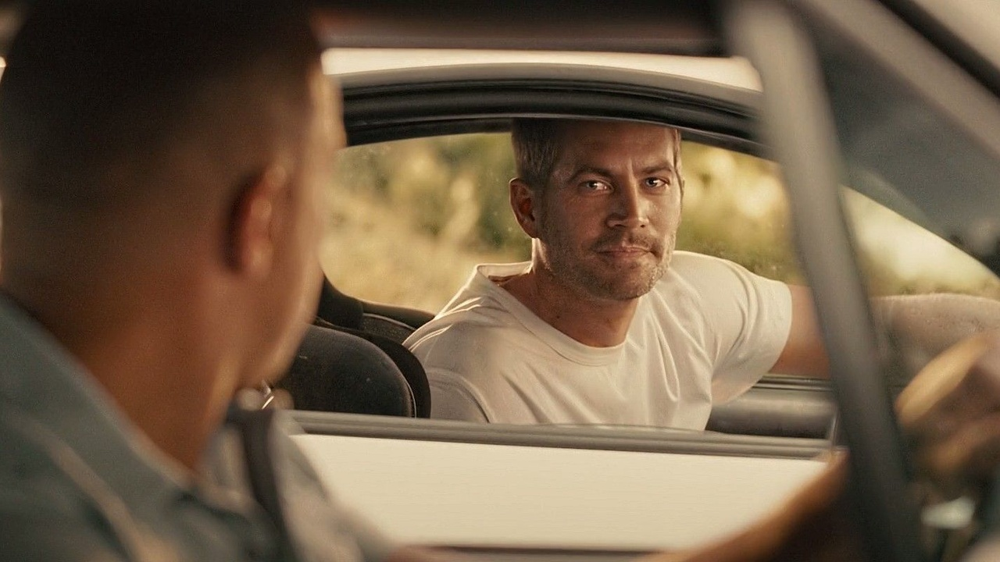
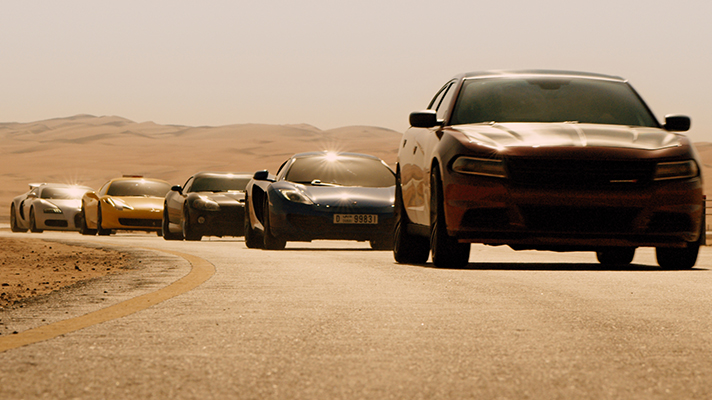
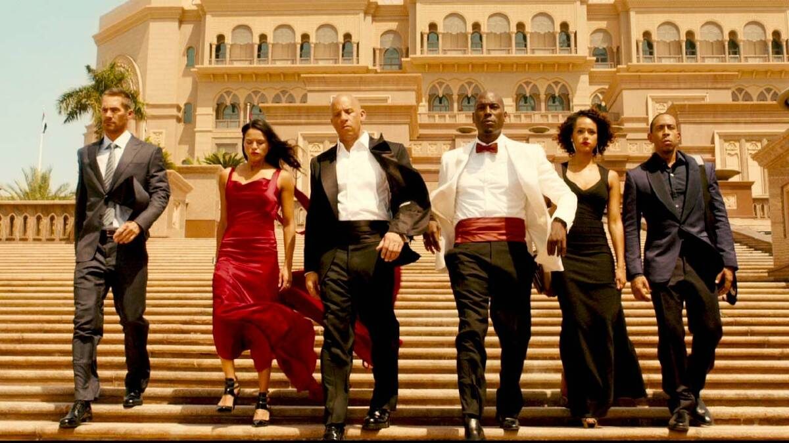
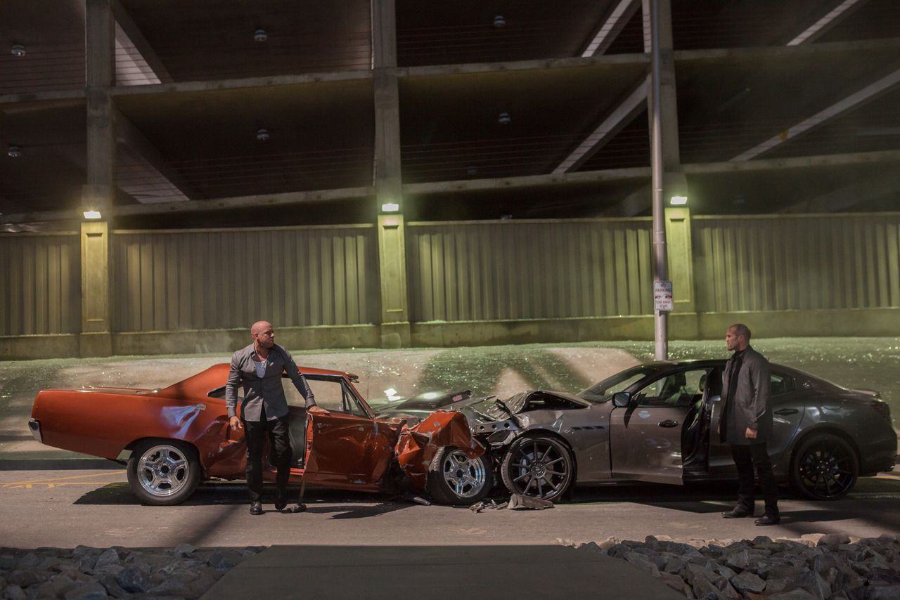
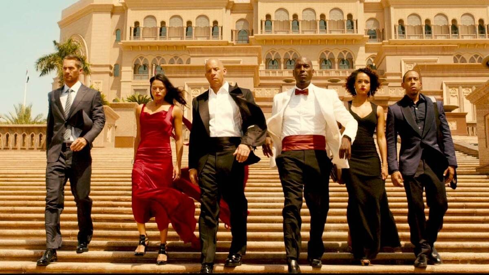
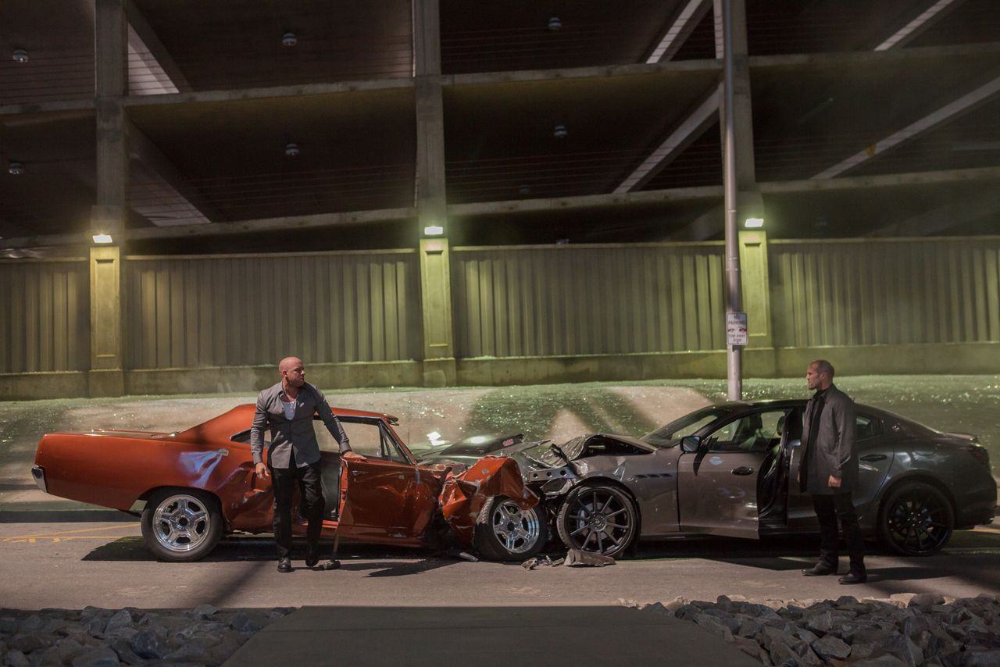

After defeating international terrorist Owen Shaw, Dominic Toretto (Vin Diesel), Brian O'Conner (Paul Walker) and the rest of the crew have separated to return to more normal lives. However, Deckard Shaw (Jason Statham), Owen's older brother, is thirsty for revenge.
A slick government agent offers to help Dom and company take care of Shaw in exchange for their help in rescuing a kidnapped computer hacker who has developed a powerful surveillance program.
  



Cast: